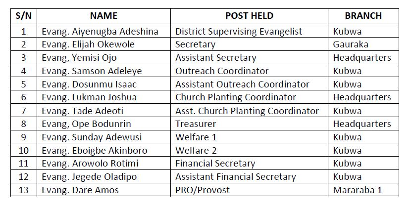

The Evangelical Council
Historical Background
Since inception of Dakibiyu District, evangelism has been the central focus of its activities in order to
fulfil its divine mandate of winning souls for Christ in an atmosphere of love. This mandate has been vigorously
pursued. This gave rise to the establishment of 12 Branches currently under Dakibiyu District as well as the
birth of Nassarawa District.
Dakibiyu Evangelical Council has remained vibrant and active even at the International Headquarters of the C&S
Movement Church Worldwide at Galilee Land, Orile-Igbon Ilorin. Dakibiyu District successfully hosted the
Conference Evangelical Council in 2016 and set a pace yet to be equaled. It also saw the ordination of more
worthy Evangelists to carry on its mandate.
On his appointment as the Senior District Secretary, Special Apostle Evangelist R. O. Ajibade was replaced by
Most Senior Apostle Evangelist Sunday Jegede (of Blessed memory) as the District Supervising Evangelist. In
October 2020, an election was conducted to usher in a new Executive for the District Evangelical Council.
CURRENT EXECUTIVES
Election was conducted for new executives in the month of October, 2020 to pilot the activities of the District Evangelical Council. The list of the executives is presented as follows:
PAST EXECUTIVES
PROGRAMMES
The year 2020 has been a challenging year for us as individuals, a church and a nation; starting from the outbreak of COVID 19 earlier in the year to the END SARS nationwide protest. It is on this note that we are appreciating the faithfulness of God as a Council for His unfailing love.
INTERNATIONAL EVANGELICAL COUNCIL
The 2020 edition of the Annual Night of Total Freedom programme was successful conducted and many lives were won. Other programs such as the National Strategic Prophetic Chain Prayer Network, Annual Convention and Outreach Evangelism could not hold due to COVID-19 Pandemic. This notwithstanding, the 2021 Evangelical Council calendar of activities for implementation is in place as presented below:
VISITATION TO BRANCHES
In order to make the Evangelical Units of Branches under Dakibiyu District to be more vibrant, recruit more Evangelists and conduct Training/Re-training of Evangelists, the Evangelical Council embarked on Visitations to Kuje Branch, Lugbe Branch, Keffi Branch, Anagada Branch, Gauraka Branch and Gwagwalada Branch in December 2020
ANAGADA BRANCH
GWAGWALADA BRANCH
KUJE BRANCH
EVANGELICAL OUTREACH
The Evangelical Council conducted a very successful Evangelical Outreach programme at Dakibiyu settlement in January 2021. It witnessed practical field engagements by Evangelists and Evangelists-in-Training in Kingdom assignments to win souls for Christ.

EVANGELIST-IN-TRAINING
A one-day training programme was organized for Evangelist-in-training in order to equip them with adequate skills for practical evangelism.

POSTING OF EVANGELIST-IN-TRAINING
The District Evangelical Council has developed programmes to effectively engage evangelists-in-training to gather practical experience through posting to branches other than their own. It will feature leading of Sunday School teaching, conducting evangelical outreaches, and other services as deem fit by the leadership of the Church.
PROGRAM OF ACTIVITIES FOR 2021
Other programs of activities scheduled for implementation include: